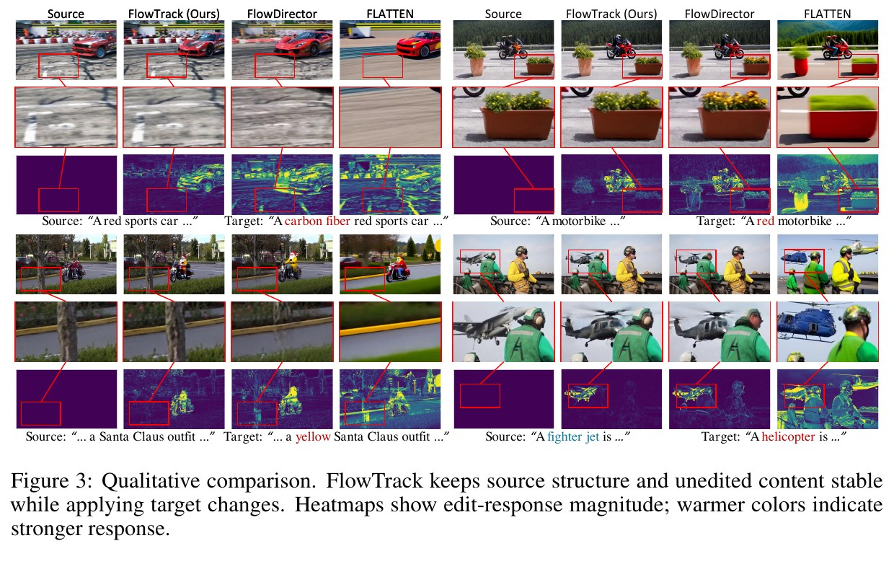
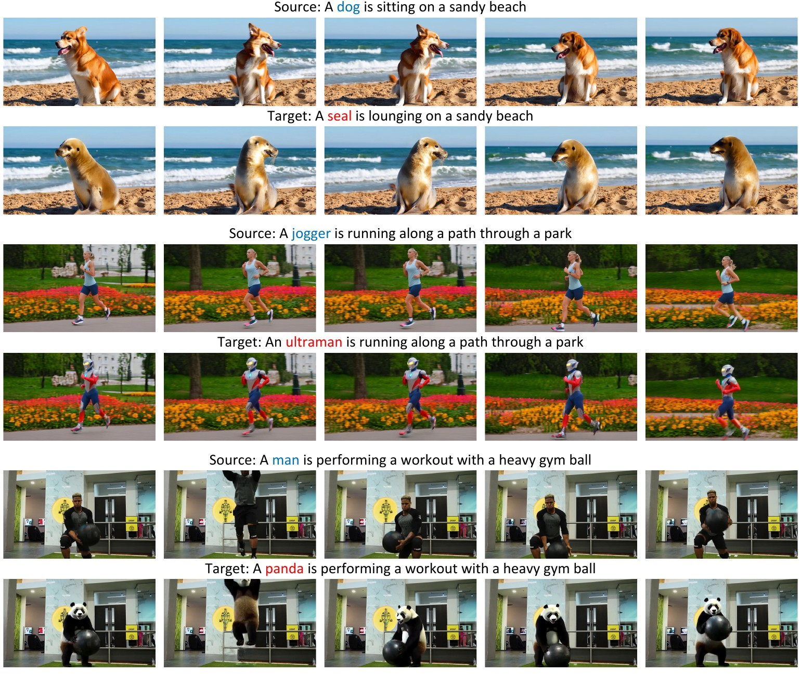

Jielun Zhong 钟杰伦
Undergraduate Researcher at Lanzhou University
我是兰州大学计算机科学与技术专业本科生，预计于 2028 年毕业。我的研究兴趣集中在 生成式人工智能、视频生成与编辑、Diffusion / Flow Matching，并正在进一步探索 具身智能。
我喜欢从一个具体问题出发，完整推进问题定义、方法设计、基线复现、实验评测和论文写作。目前已完成 FlowTrack，并正在推进 Between Glances 等第一作者研究工作。
News
FlowTrack 被 NeurIPS 2026 接收，评审分数为 5 / 4 / 4。
加入上海交通大学人工智能学院，开展具身智能方向科研实习。
FlowTrack 完成并投稿 NeurIPS 2026，担任第一作者。
Between Glances 投稿 ICLR 2027，担任第一作者。
获全球校园人工智能算法精英大赛全国总决赛一等奖。
开始视频生成与编辑方向科研实习。
Selected Research
* first author2026–2027
第 29 届䇹政基金科研见习研究项目
研究外部先验与内部编辑置信协同的视频编辑方法，负责研究推进、方法实现与小组协作。
Projects & Demos
selected builds
Research demo2026
FlowTrack
在无需 inversion 的 Flow Video Editing 中控制编辑信号执行，现已被 NeurIPS 2026 接收。

Interactive demo2026
FocusFlow
用 Target Guidance Reallocation 和 Expectation-Confidence Filtering 实现可靠的局部视频编辑。
ICLR 2027 · Under Review2026
Between Glances
研究 GRACE 如何利用几何记忆，在机器人观察间隔中自适应执行 action chunks 并进行重规划。
LZU / LLMlearn · research · build
Research Experience
上海交通大学 · 人工智能学院
Research Intern · Embodied Intelligence
参与文献调研、实验实现与研究讨论，探索视觉模型与真实环境的连接。
National University of Singapore
Research Intern · Video Generation
围绕 training-free / inversion-free 视频编辑开展研究，完成两项第一作者工作。
兰州大学 · 计算机科学与技术
B.Eng. Candidate
GPA 4.17 / 5.00，专业排名 8 / 114（前 7%），加权平均分 91.65。
Honors & Scholarships
2026
蔡达诚奖学金
2026
中国机器人及人工智能大赛 · 国家二等奖
2026
中国机器人及人工智能大赛 · 省级一等奖
2025
全球校园人工智能算法精英大赛全国总决赛 · 国家级一等奖
2025
全球校园人工智能算法精英大赛省级选拔赛 · 省级一等奖
2025
全国大学生电子设计竞赛甘肃赛区选拔赛 · 省级二等奖
2024
蓝桥杯 C/C++ 程序设计大学 A 组 · 省级二等奖
Skills
- Research
- Generative AI, video generation & editing, diffusion, flow matching, embodied AI
- Programming
- Python, PyTorch, C/C++, Java, Git, Linux, LaTeX
- Languages
- Chinese (native), English (CET-4 569, CET-6 551)
Contact
欢迎交流生成式视频、Flow Matching、具身智能与科研合作。
zhongjielun2023@gmail.com